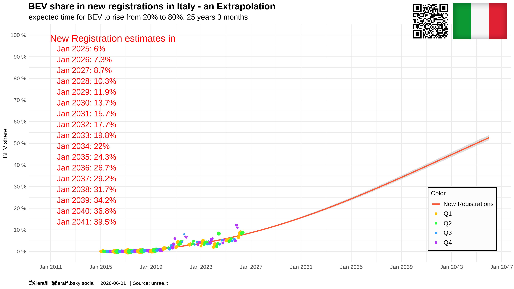
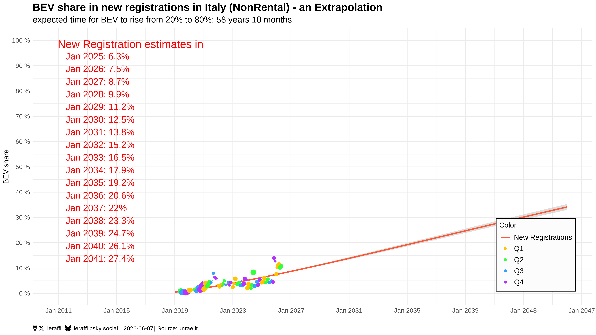
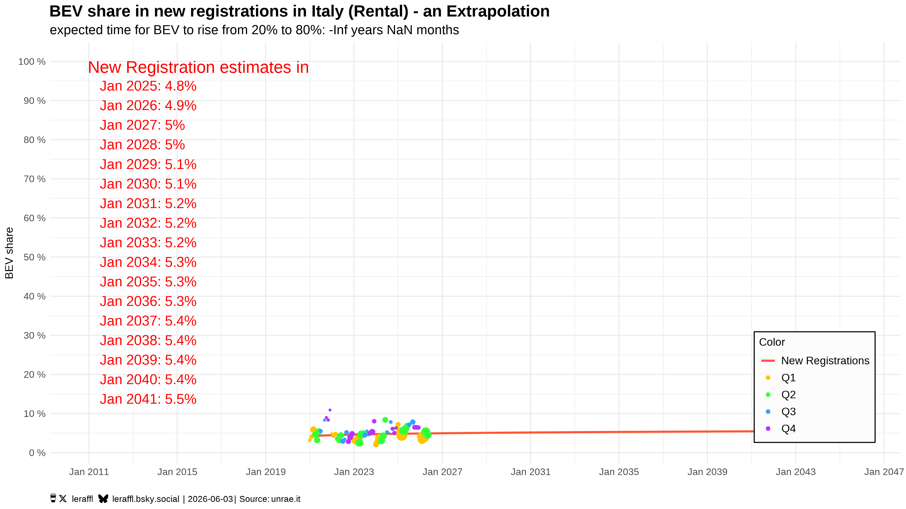

Italy is one of Europe's slowest BEV markets. In my BEV Trajectory Gallery, the whole-market curve needs around 25 years to climb from 20% to 80% BEV share, which is bottom-tier territory, down with Slovakia and Lithuania. But that single number turns out to be a picture that has room for a deep dive, and I only had to do one thing to do that dive: split Italy's UNRAE registrations into rental fleets and everything else.
A quick word on the split, because it isn't the obvious one. My Rental segment combines long-term rental (NLT), short-term rental (NBT), and rental-flagged dealer registrations (together about a third of all Italian registrations). NonRental is the rest, mostly private buyers, plus some direct corporate purchases and private leases. It's a split by registration channel, not by "person versus company", although it is not too far off.
The observation
Here's the whole market — the number everyone quotes:

Now everything except rental fleets:

And rental fleets alone:

That's the whole story in three pictures. Strip out the rental fleets and Italy's transition time drops from ~25 years to ~17, which still not fast, but a completely different league as it is Spain / Romania / South Korea territory: unspectacular, but clearly moving. The ~25 year blended figure, by contrast, sits in a much slower group. And the rental curve on its own? Effectively frozen.
Since rental is roughly a third of Italian registrations, that frozen segment is heavy enough to drag the national average down into laggard territory. So the headline "Italy is slow" is real, but the diagnosis hidden behind it is the interesting part: The people of Italy are adopting BEVs at a fairly ordinary pace. The rental market is what's stuck. And if anything, the pure-private slice is probably a little faster still than the ~17 year NonRental figure, since NonRental also contains corporate and self-registration channels.
Why the rental market specifically
Once you see it as a rental problem, the mechanism is fairly intuitive. A private buyer chooses a BEV: they read up on it, they know where they'll charge, they accept the early-adopter quirks because they opted in. A rental customer does none of that. They land at an airport, they're handed whatever's on the lot (often a brand they've never driven) and they drive off immediately. There's no research phase, no adaptation window. The car has to just work, from minute one, for someone who knows nothing about charging in Italy.
And that's exactly where Italy's charging network lets them down. Take Tuscany. In a town like Lucca there's some charging, though not much and not cheap. Drive out into the hills and the rural interior where a huge part of the appeal of the region is, and there's essentially nothing. The coastal resort strips are sometimes better, but a tourist in a rented BEV doesn't know in advance which of those worlds they're driving into, and they have no way to plan around it. One bad experience, be it a dead battery in the hills, or a charger that bills some absurd ad-hoc rate with no warning, and that's their whole opinion of EVs, on Italy and on the rental company formed.
A Tesla driver sidesteps all of this: type the destination, the car routes through Superchargers, it always works, you don't have to know anything. That's the standard the rest of the market has to match, but in Italy it doesn't. Tesla doesn't dominate here, people and the rental companies want other brands as well, and those brands rely on whoever happens to operate the local chargers and sell the electricity. Right now that patchwork simply doesn't deliver a Tesla-grade experience. The rental operator, sitting in the middle, carries all the risk: hand a tourist a BEV that strands them, and the complaint lands on the rental company, not on the customer's own choice. So they keep buying Diesel.
Why this matters more than one slow segment
It would be easy to file this under "one channel lags, no big deal". I think that undersells it, because of what Italy is. Italy isn't going to win the car-manufacturing race. Me saying that should surprise no one. A brand like Fiat isn't going to win the Italian BEV market race while globally everything is consolidating hard around Tesla, BYD and a handful of other brands mostly from Asia. No, what Italy is, overwhelmingly, is a tourism country.
The rest of the world is electrifying. Within a few years, the visitors arriving in Italy will increasingly be BEV drivers by default, that's simply what they'll have at home and what they'll expect to rent. For a while they'll tolerate being handed a combustion car in Italy, because "that's just how Italy is". But that tolerance has a shelf life. A visitor who has a frustrating BEV experience in Tuscany and a smooth one in Spain or France draws the obvious conclusion about where to go next time. The frozen rental curve isn't a charging statistic but an early warning sign about the competitiveness of Italy's single most important industry.
What would actually move it
The encouraging flip side: a structural problem is a fixable problem. A few levers exist, none of which require a technological breakthrough.
- Build a real national fast-charging backbone. Italy specifically needs DC coverage. I'm an AC charging fan in general, but tourists need speed more than they do an overnight trickle. Think of Deutschlandnetz or the Supercharger network: dense enough that you never have to think about it, including the rural and interior routes, not just cities and motorways.
- Cap the surprises. Tourists don't arrive with charging subscriptions and RFID cards, they get a car and charge ad hoc. So ad-hoc pricing needs an upper bound and has to be shown clearly before you plug in. That's not central planning, it's consumer protection. Ideally cost per kWh would be such that things end up cheaper than with fossil cars, but having a cap before prices get ridiculous is the minimum.
- Subsidise charging where visitors already are. Incentives for Airbnb hosts and hotels to install wallboxes, support for supermarket and restaurant charging (the Lidl model in other countries is the obvious template). Let private operators build it and the government just helps out. A host who wants happy guests and a restaurant chain that wants to feed footfall fans will do the rest.
- Use fleet quotas if needed. A minimum BEV share for rental and leasing fleets would move a third of the market on a defined timeline while giving the industry some certainty, but it only works if the charging exists first. Network before mandate, otherwise you're forcing operators into the exact trap that froze the curve.
Coordination is needed, mostly from the government, because no single rental operator can or should be expected to wire up the country.
The part that travels
The reason I find this worth writing up is that the method generalizes, even if Italy's specifics don't. The principle underneath is that infrastructure and adoption have to grow together. When BEVs on the road get ahead of a charging network that's reliable, affordable and widespread, the strain shows up first in whoever didn't choose the car. In Italy that's rental tourists. Elsewhere it could be mandated company fleets, apartment-dwellers with no home charging, or an outlier region. Same failure mode, different costume.
Spain is the obvious next place to look, comparable tourism, comparable geography, quite possibly the same hidden split. I don't have the data on that yet, but I think general advice can be given:
- Find the drivers who didn't opt in, they're an early-warning indicator.
- For a tourism economy, prioritise DC coverage where people drive, rather than where your population lives.
- Cap ad-hoc prices somehow.
- Build the network before scaling purchase incentives or mandates.
Italy's headline says "laggard". The split says something both more accurate and more actionable: The people are fine. Worry about your Tourism. Improve your country!